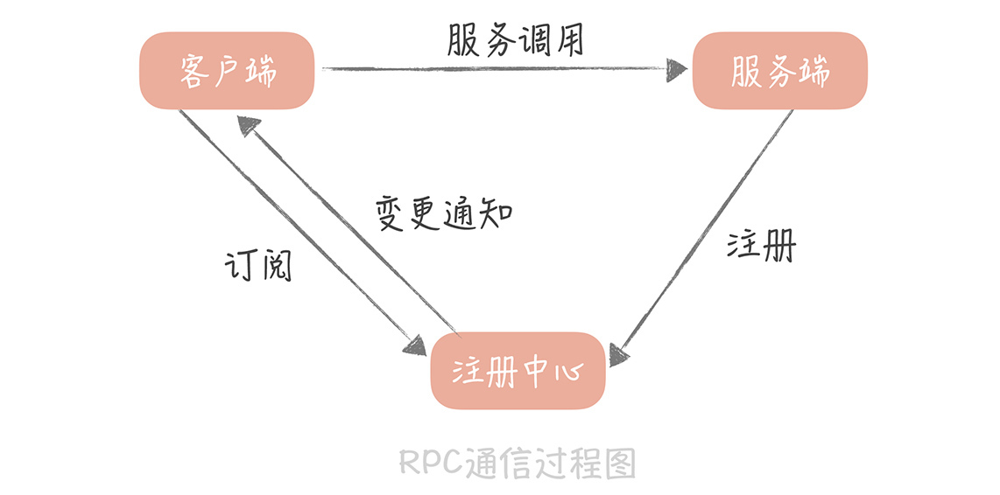

- 00 开篇词 为什么你要学习高并发系统设计？.md.html
- 01 高并发系统：它的通用设计方法是什么？.md.html
- 02 架构分层：我们为什么一定要这么做？.md.html
- 03 系统设计目标（一）：如何提升系统性能？.md.html
- 04 系统设计目标（二）：系统怎样做到高可用？.md.html
- 05 系统设计目标（三）：如何让系统易于扩展？.md.html
- 06 面试现场第一期：当问到组件实现原理时，面试官是在刁难你吗？.md.html
- 07 池化技术：如何减少频繁创建数据库连接的性能损耗？.md.html
- 08 数据库优化方案（一）：查询请求增加时，如何做主从分离？.md.html
- 09 数据库优化方案（二）：写入数据量增加时，如何实现分库分表？.md.html
- 10 发号器：如何保证分库分表后ID的全局唯一性？.md.html
- 11 NoSQL：在高并发场景下，数据库和NoSQL如何做到互补？.md.html
- 12 缓存：数据库成为瓶颈后，动态数据的查询要如何加速？.md.html
- 13 缓存的使用姿势（一）：如何选择缓存的读写策略？.md.html
- 14 缓存的使用姿势（二）：缓存如何做到高可用？.md.html
- 15 缓存的使用姿势（三）：缓存穿透了怎么办？.md.html
- 16 CDN：静态资源如何加速？.md.html
- 17 消息队列：秒杀时如何处理每秒上万次的下单请求？.md.html
- 18 消息投递：如何保证消息仅仅被消费一次？.md.html
- 19 消息队列：如何降低消息队列系统中消息的延迟？.md.html
- 20 面试现场第二期：当问到项目经历时，面试官究竟想要了解什么？.md.html
- 21 系统架构：每秒1万次请求的系统要做服务化拆分吗？.md.html
- 22 微服务架构：微服务化后，系统架构要如何改造？.md.html
- 23 RPC框架：10万QPS下如何实现毫秒级的服务调用？.md.html
- 24 注册中心：分布式系统如何寻址？.md.html
- 25 分布式Trace：横跨几十个分布式组件的慢请求要如何排查？.md.html
- 26 负载均衡：怎样提升系统的横向扩展能力？.md.html
- 27 API网关：系统的门面要如何做呢？.md.html
- 28 多机房部署：跨地域的分布式系统如何做？.md.html
- 29 Service Mesh：如何屏蔽服务化系统的服务治理细节？.md.html
- 30 给系统加上眼睛：服务端监控要怎么做？.md.html
- 31 应用性能管理：用户的使用体验应该如何监控？.md.html
- 32 压力测试：怎样设计全链路压力测试平台？.md.html
- 33 配置管理：成千上万的配置项要如何管理？.md.html
- 34 降级熔断：如何屏蔽非核心系统故障的影响？.md.html
- 35 流量控制：高并发系统中我们如何操纵流量？.md.html
- 36 面试现场第三期：你要如何准备一场技术面试呢？.md.html
- 37 计数系统设计（一）：面对海量数据的计数器要如何做？.md.html
- 38 计数系统设计（二）：50万QPS下如何设计未读数系统？.md.html
- 39 信息流设计（一）：通用信息流系统的推模式要如何做？.md.html
- 40 信息流设计（二）：通用信息流系统的拉模式要如何做？.md.html
- 加餐 数据的迁移应该如何做？.md.html
- 期中测试 10道高并发系统设计题目自测.md.html
- 用户故事 从“心”出发，我还有无数个可能.md.html
- 结束语 学不可以已.md.html
- 捐赠
24 注册中心：分布式系统如何寻址？
你好，我是唐扬。
上一节课，我带你了解了 RPC 框架实现中的一些关键的点，你通过 RPC 框架，能够解决服务之间，跨网络通信的问题，这就完成了微服务化改造的基础。
但是在服务拆分之后，你需要维护更多的细粒度的服务，而你需要面对的第一个问题就是，如何让 RPC 客户端知道服务端部署的地址，这就是我们今天要讲到的，服务注册与发现的问题。
你所知道的服务发现
服务注册和发现不是一个新的概念，你在之前的实际项目中也一定了解过，只是你可能没怎么注意罢了。比如说，你知道 Nginx 是一个反向代理组件，那么 Nginx 需要知道，应用服务器的地址是什么，这样才能够将流量透传到应用服务器上，这就是服务发现的过程。
那么 Nginx 是怎么实现的呢？它是把应用服务器的地址配置在了文件中。
这固然是一种解决的思路，实际上，我在早期的项目中也是这么做的。那时，项目刚刚做了服务化拆分，RPC 服务端的地址，就是配置在了客户端的代码中，不过，这样做之后出现了几个问题：
首先在紧急扩容的时候，就需要修改客户端配置后，重启所有的客户端进程，操作时间比较长；
其次，一旦某一个服务器出现故障时，也需要修改所有客户端配置后重启，无法快速修复，更无法做到自动恢复；
最后，RPC 服务端上线无法做到提前摘除流量，这样在重启服务端的时候，客户端发往被重启服务端的请求还没有返回，会造成慢请求甚至请求失败。
因此，我们考虑使用注册中心来解决这些问题。
目前业界有很多可供你来选择的注册中心组件，比如说老派的 ZooKeeper，Kubernetes 使用的 ETCD，阿里的微服务注册中心 Nacos，Spring Cloud 的 Eureka 等等。
这些注册中心的基本功能有两点：
其一是提供了服务地址的存储；
其二是当存储内容发生变化时，可以将变更的内容推送给客户端。
第二个功能是我们使用注册中心的主要原因。因为无论是，当我们需要紧急扩容，还是在服务器发生故障时，需要快速摘除节点，都不用重启服务器就可以实现了。使用了注册中心组件之后，RPC 的通信过程就变成了下面这个样子：

从图中，你可以看到一个完整的，服务注册和发现的过程：
客户端会与注册中心建立连接，并且告诉注册中心，它对哪一组服务感兴趣；
服务端向注册中心注册服务后，注册中心会将最新的服务注册信息通知给客户端；
客户端拿到服务端的地址之后就可以向服务端发起调用请求了。
从这个过程中可以看出，有了注册中心之后，服务节点的增加和减少对于客户端就是透明的。这样，除了可以实现不重启客户端，就能动态地变更服务节点以外，还可以实现优雅关闭的功能。
优雅关闭是你在系统研发过程中，必须要考虑的问题。因为如果暴力地停止服务，那么已经发送给服务端的请求，来不及处理服务就被杀掉了，就会造成这部分请求失败，服务就会有波动。所以，服务在退出的时候，都需要先停掉流量，再停止服务，这样服务的关闭才会更平滑，比如说，消息队列处理器就是要将所有，已经从消息队列中读出的消息，处理完之后才能退出。
对于 RPC 服务来说，我们可以先将 RPC 服务从注册中心的服务列表中删除掉，然后观察 RPC 服务端没有流量之后，再将服务端停掉。有了优雅关闭之后，RPC 服务端再重启的时候，就会减少对客户端的影响。
在这个过程中，服务的上线和下线是由服务端主动向注册中心注册、和取消注册来实现的，这在正常的流程中是没有问题的。可是，如果某一个服务端意外故障，比如说机器掉电，网络不通等情况，服务端就没有办法向注册中心通信，将自己从服务列表中删除，那么客户端也就不会得到通知，它就会继续向一个故障的服务端发起请求，也就会有错误发生了。那这种情况如何来避免呢？其实，这种情况是一个服务状态管理的问题。
服务状态管理如何来做
针对上面我提到的问题，我们一般会有两种解决思路。
第一种思路是主动探测，方法是这样的：
你的 RPC 服务要打开一个端口，然后由注册中心每隔一段时间（比如 30 秒）探测这些端口是否可用，如果可用就认为服务仍然是正常的，否则就可以认为服务不可用，那么注册中心就可以把服务从列表里面删除了。
微博早期的注册中心就是采用这种方式，但是后面出现的两个问题，让我们不得不对它做改造。
第一个问题是：所有的 RPC 服务端都需要，开放一个统一的端口给注册中心探测，那时候还没有容器化，一台物理机上会混合部署很多的服务，你需要开放的端口很可能已经被占用，这样会造成 RPC 服务启动失败。
还有一个问题是：如果 RPC 服务端部署的实例比较多，那么每次探测的成本也会比较高，探测的时间也比较长，这样当一个服务不可用时，可能会有一段时间的延迟，才会被注册中心探测到。
因此，我们后面把它改造成了心跳模式。
这也是大部分注册中心提供的，检测连接上来的 RPC 服务端是否存活的方式，比如 Eureka、ZooKeeper，在我来看，这种心跳机制可以这样实现：
注册中心为每一个连接上来的 RPC 服务节点，记录最近续约的时间，RPC 服务节点在启动注册到注册中心后，就按照一定的时间间隔（比如 30 秒），向注册中心发送心跳包。注册中心在接受到心跳包之后，会更新这个节点的最近续约时间。然后，注册中心会启动一个定时器，定期检测当前时间和节点，最近续约时间的差值，如果达到一个阈值（比如说 90 秒），那么认为这个服务节点不可用。
在实际的使用中，心跳机制相比主动探测的机制，适用范围更广，如果你的服务也需要检测是否存活，那么也可以考虑使用心跳机制来检测。
接着说回来，有了心跳机制之后，注册中心就可以管理注册的服务节点的状态了，也让你的注册中心成为了整体服务最重要的组件，因为一旦它出现问题或者代码出现 Bug，那么很可能会导致整个集群的故障，给你举一个真实的案例。
在我之前的一个项目中，工程是以“混合云”的方式部署的，也就是一部分节点部署在自建机房中，一部分节点部署在云服务器上，每一个机房都部署了自研的一套注册中心，每套注册中心中都保存了全部节点的数据。
这套自研的注册中心使用 Redis 作为最终的存储，而在自建机房和云服务器上的注册中心，共用同一套 Redis 存储资源。由于“混合云”还处在测试阶段，所以，所有的流量还都在自建机房，自建机房和云服务器之前的专线带宽还比较小，部署结构如下：

在测试的过程中，系统运行稳定，但是某一天早上五点，我突然发现，所有的服务节点都被摘除了，客户端因为拿不到服务端的节点地址列表全部调用失败，整体服务宕机。经过排查我发现，云服务器上部署的注册中心，竟然将所有的服务节点全部删除了！进一步排查之后，原来是自研注册中心出现了 Bug。
在正常的情况下，无论是自建机房，还是云服务器上的服务节点，都会向各自机房的注册中心注册地址信息，并且发送心跳。而这些地址信息，以及服务的最近续约时间，都是存储在 Redis 主库中，各自机房的注册中心，会读各自机房的从库来获取最近续约时间，从而判断服务节点是否有效。
Redis 的主从同步数据是通过专线来传输的，出现故障之前，专线带宽被占满，导致主从同步延迟。这样一来，云上部署的 Redis 从库中存储的最近续约时间，就没有得到及时更新，随着主从同步延迟越发严重，最终，云上部署的注册中心发现了，当前时间与最近续约时间的差值，超过了摘除的阈值，所以将所有的节点摘除，从而导致了故障。
有了这次惨痛的教训，我们给注册中心增加了保护的策略：如果摘除的节点占到了服务集群节点数的 40%，就停止摘除服务节点，并且给服务的开发同学和，运维同学报警处理（这个阈值百分比可以调整，保证了一定的灵活性）。
据我所知，Eureka 也采用了类似的策略，来避免服务节点被过度摘除，导致服务集群不足以承担流量的问题。如果你使用的是 ZooKeeper 或者 ETCD 这种无保护策略的分布式一致性组件，那你可以考虑在客户端，实现保护策略的逻辑，比如说当摘除的节点超过一定比例时，你在 RPC 客户端就不再处理变更通知，你可以依据自己的实际情况来实现。
除此之外，在实际项目中，我们还发现注册中心另一个重要的问题就是“通知风暴”。你想一想，变更一个服务的一个节点，会产生多少条推送消息？假如你的服务有 100 个调用者，有 100 个节点，那么变更一个节点会推送 100 * 100 = 10000 个节点的数据。那么如果多个服务集群同时上线或者发生波动时，注册中心推送的消息就会更多，会严重占用机器的带宽资源，这就是我所说的“通知风暴”。那么怎么解决这个问题呢？你可以从以下几个方面来思考：
首先，要控制一组注册中心管理的服务集群的规模，具体限制多少没有统一的标准，你需要结合你的业务以及注册中心的选型来考虑，主要考察的指标就是注册中心服务器的峰值带宽；
其次，你也可以通过扩容注册中心节点的方式来解决；
再次，你可以规范一下对于注册中心的使用方式，如果只是变更某一个节点，那么只需要通知这个节点的变更信息即可；
最后，如果是自建的注册中心，你也可以在其中加入一些保护策略，比如说如果通知的消息量达到某一个阈值就停止变更通知。
其实，服务的注册和发现，归根结底是服务治理中的一环，服务治理（service governance），其实更直白的翻译应该是服务的管理，也就是解决多个服务节点，组成集群的时候，产生的一些复杂的问题。为了帮助你理解，我来做个简单的比喻。
你可以把集群看作是一个微型的城市，把道路看做是组成集群的服务，把行走在道路上的车当做是流量，那么服务治理就是对于整个城市道路的管理。
如果你新建了一条街道（相当于启动了一个新的服务节点），那么就要通知所有的车辆（流量）有新的道路可以走了；你关闭了一条街道，你也要通知所有车辆不要从这条路走了，这就是服务的注册和发现。
我们在道路上安装监控，监视每条道路的流量情况，这就是服务的监控。
道路一旦出现拥堵或者道路需要维修，那么就需要暂时封闭这条道路，由城市来统一调度车辆，走不堵的道路，这就是熔断以及引流。
道路之间纵横交错四通八达，一旦在某条道路上出现拥堵，但是又发现这条道路从头堵到尾，说明事故并不是发生在这条道路上，那么就需要从整体链路上来排查事故究竟处在哪个位置，这就是分布式追踪。
不同道路上的车辆有多有少，那么就需要有一个警察来疏导，在某一个时间走哪一条路会比较快，这就是负载均衡。
而这些问题，我会在后面的课程中针对性地讲解。
课程小结
本节课，我带你了解了在微服务架构中，注册中心是如何实现服务的注册和发现的，以及在实现中遇到的一些坑，除此之外，我还带你了解了服务治理的含义，以及后续我们会讲到的一些技术点。在这节课中，我想让你明确的重点如下：
注册中心可以让我们动态地，变更 RPC 服务的节点信息，对于动态扩缩容，故障快速恢复，以及服务的优雅关闭都有重要的意义；
心跳机制是一种常见的探测服务状态的方式，你在实际的项目中也可以考虑使用；
我们需要对注册中心中管理的节点提供一些保护策略，避免节点被过度摘除导致的服务不可用。
你看，注册中心虽然是一种简单易懂的分布式组件，但是它在整体架构中的位置至关重要，不容忽视。同时，在它的设计方案中，也蕴含了一些系统设计的技巧，比如上，面提到的服务状态检测的方式，还有上面提到的优雅关闭的方式，了解注册中心的原理，会给你之后的研发工作提供一些思路。
© 2019 - 2023 Liangliang Lee. Powered by gin and hexo-theme-book.